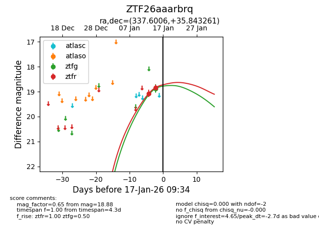
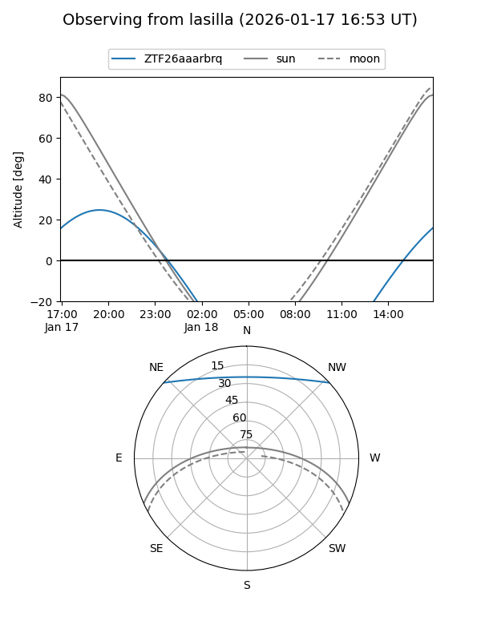
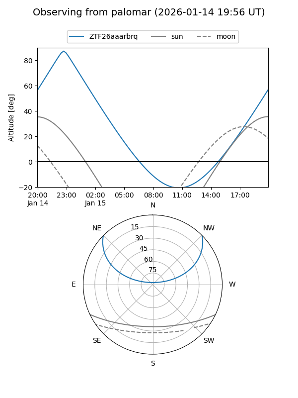

ZTF26aaarbrq
Target ZTF26aaarbrq at 2026-01-15 08:26
Aliases and brokers:
FINK: link
Lasair: link
ALeRCE: link
alt names
ZTF26aaarbrq (ztf,fink_ztf)
Coordinates:
equatorial (ra, dec) = 337.6006,+35.84326
equatorial (HMS+DMS) = 22:30:24.15,+35:50:35.74
galactic (l, b) = (93.3090,-18.78914)
Flags:
Photometry:
last ztfg=18.88, ztfr=19.07
1 ztfg, 1 ztfr detections
Lightcurve

Visibility


Additional plots